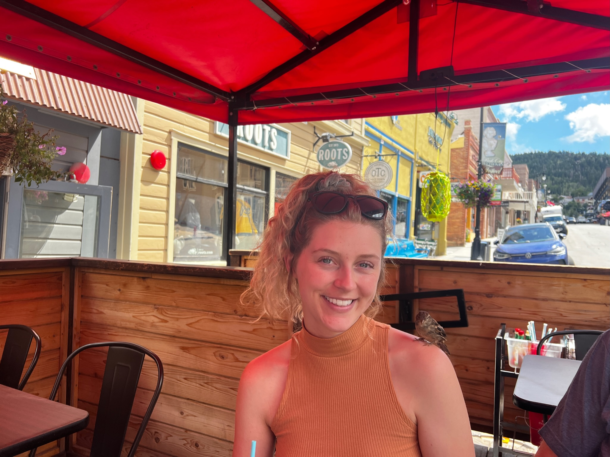
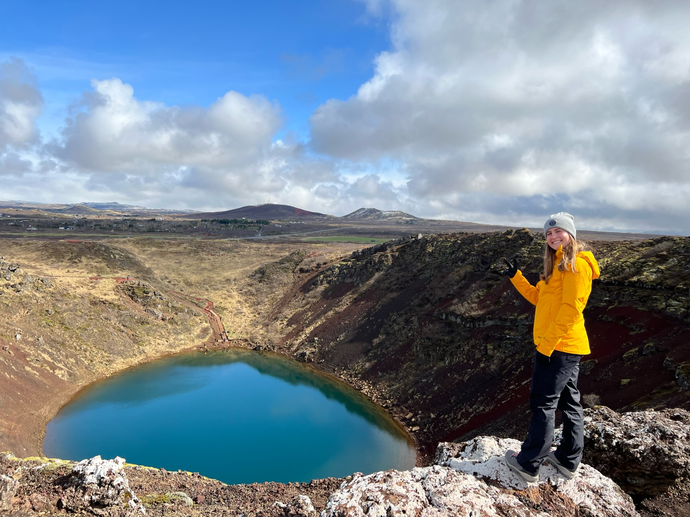

About Us
Welcome to the family
We call ourselves the Finnucci family which is a combination of our Irish and Italian last names (Finn & Iannucci). We are Michigan natives from the Detroit metropolitan area as well as a house-divided. Our family is comprised of four members: Sandra Iannucci, Thomas Finn, Arianna Finn, and Abigail Finn (that's me!). This past summer of 2022 we had some interesting adventures in Iceland and Utah. Continue reading to learn more about us and the trips we went on together.
Thomas Finn
Tom Finn is the father of the Finnucci family and alumni of Michigan State University where he studied mechanical engineering. He enjoys classical rock music and watching football. He grew up in Bloomfiend Hills, Michigan and went to high school at Brother Rice where he played football and ran track. He still has multiple athletic records there that stand to this day! He currently works for Noble Gas Systems and worked on a compressor that is a contender for best inventions in Michigan for 2022.
Sandra Iannucci
Sandra Iannucci is the mother of the Finnucci family and a first generation Italian immigrant from Castro Dei Volsci. She grew up in Allen Park, Michigan and was a member of the Southgate marching band team that performed at multiple Mardi Gras in New Orleans. For college, she went to the University of Michigan where she studied Industrial Engineering.
Arianna Finn
Ari Finn is the eldest daughter of the Finnucci family and a current senior at Michigan State University studying mechanical engineering. Ari was born in Lisbon, Portugal and is currently rooting for them in the World Cup (big Ronaldo fan!). She is also mostly deaf, as she has dealt with progressive hearing loss her entire life. She got her first pair of hearing aids at the age of 15 before all of our grandparents. She is an acceptional athlete that ran the 400 in track, played soccer and swam.
Abigail Finn
My name is Abby Finn and I am the youngest daughter of the Finnucci family. I am a junior at the University of Michigan studying Information and Spanish. I am also an alumni of the Michigan Women's Soccer team. In 2021, our team won the BIG 10 Championship and made it to the Elite 8 in the NCAA tournament.